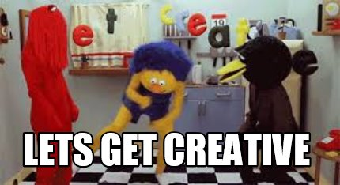
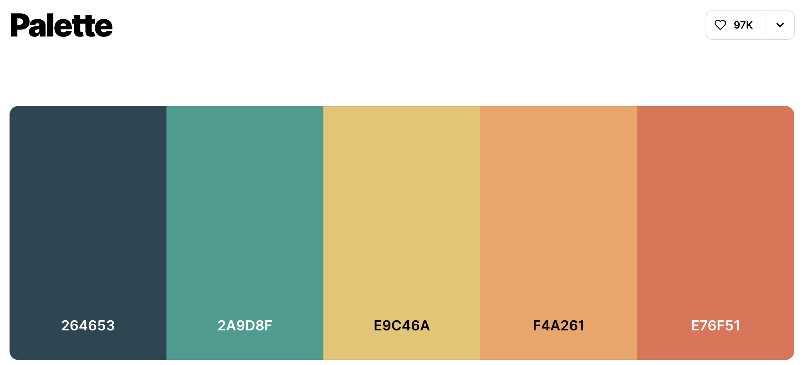
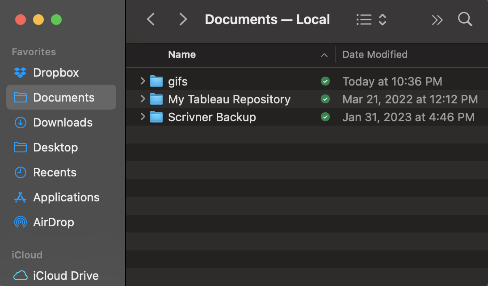
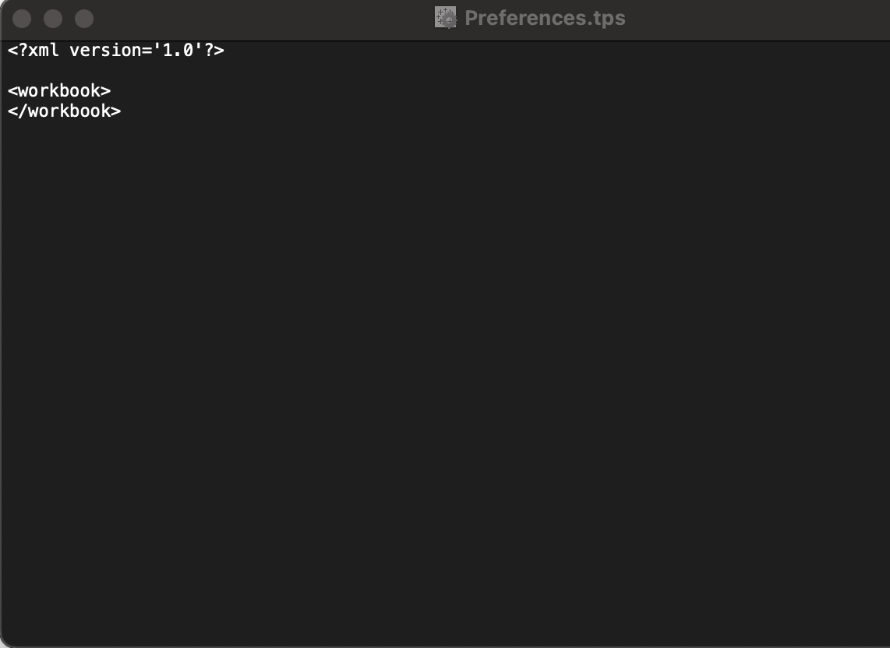
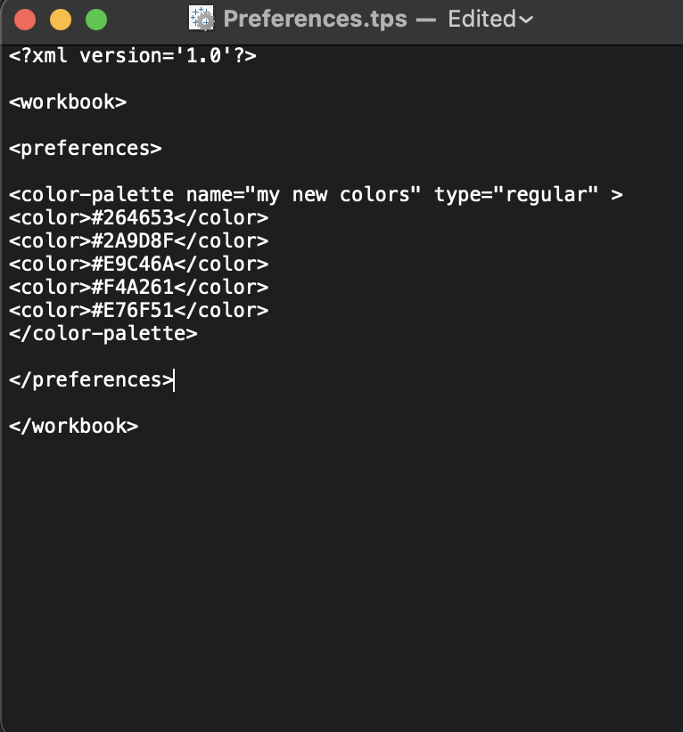
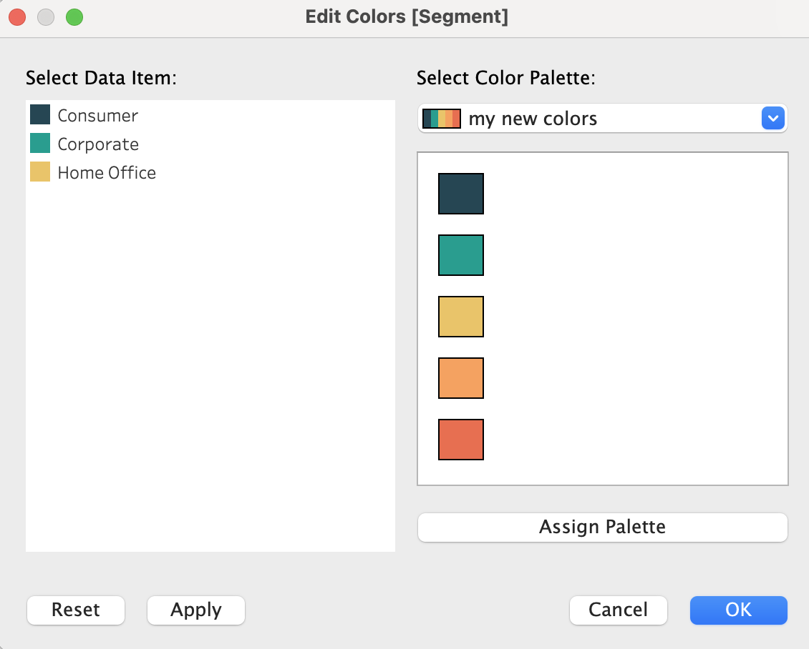

I’m not the most creative person and visualizations are not my favorite thing to work on (sorry!). With that being said, I’m always on the lookout for easy tricks that make it look like I spent more time on a visualization than I actually did 0:) In this blog, I’ll go over how to add a custom color palette to Tableau.

One of my favorite things to do is to use custom color palettes because it gives the impression of a more polished product without too much effort. To me, its part of the Pareto principle in action and I’m all for that.
Choosing the Color Palette
In higher education, most colleges have their style guide or brand guidelines on their website so usually when I work with a new client or get a new job, I often just add their color palette to Tableau if I plan to do any visualizations. UCLA for example has a very comprehensive webpage dedicated to their color palette and some strict rules about their brand identity here.1
Out of fear of violating some rules, in this example, we will just add a random color palette I found on from coolors.co.

To add custom colors in Tableau, we just need the hex codes. In the palette above, they are provided for us. In most cases, I’ve found that the style guides often have the hex codes, but if they only provide RGB values, you can always use a converter online2. Once we have the hex codes for our color palette, we are ready to add them to the Tableau Preferences file.
Updating Tableau Preferences
The first thing we need to do is go to the “My Tableau Repository” folder, which is usually in your Documents folder.

Inside the “My Tableau Repository” folder, there will be a file called Preferences.tps which you should open using a text editor. If you have never added anything to the preferences file before, it should look pretty empty. To add the color palettes, we want to add some text between the workbook tags.

For our specific color palette, we can add the text below. What you will notice is that we are naming our color palette “my new colors” and have added the 5 hex codes from above.
<preferences>
<color-palette name="my new colors" type="regular" >
<color>#264653</color>
<color>#2A9D8F</color>
<color>#E9C46A</color>
<color>#F4A261</color>
<color>#E76F51</color>
</color-palette>
</preferences>
Once we’ve added the above code, our preferences file should look like this:

Now, all we have to do is save our file and open Tableau. In Tableau, we will see our new color palette at the bottom of the listed color palettes.

Now we are done. We can always add more color palettes if needed. This works in both Tableau Desktop and Tableau Public.
Footnotes
As an aside, it’s really funny to me how seriously some colleges take their brand identity. It’s especially rich for an institution within a system like UCLA to use blue and gold to differentiate itself from all the other UCs that also use blue and gold. As they state on their brand guidelines website: “UCLA’s colors evoke the blue of the sea and sky and the gold of the sun and wildflowers, especially the California poppy. There’s a brightness to UCLA Blue and UCLA Gold that’s especially appropriate to Southern California, and different from other University of California campuses.” Okay…lol.↩︎
This is a useful RGB to HEX converter: https://htmlcolorcodes.com/rgb-to-hex/↩︎